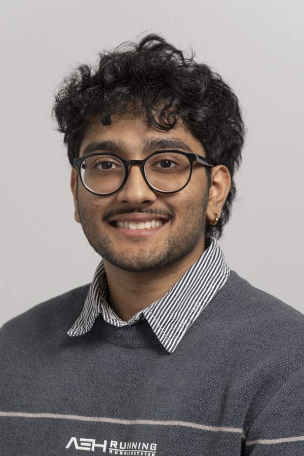

Bsc student at Aalborg University. Interested in representation learning, ML, and building systems that work outside the notebook.

Self-supervised pipeline to cluster DNA fragments from mixed microbial samples — no labels, no reference genomes. Curriculum learning trains on easy sequence pairs first, gradually tackling harder ones. Compared k-mer embeddings, DNABERT-S, and a contrastive approach across 6 benchmark datasets. Identified overfitting after ~100 epochs; proposed early stopping as an honest evaluation of where curriculum learning falls short vs. large pretrained models.
Analyzed how false information propagates through a social network vs. factual content. Built a full pipeline on 125GB of Bluesky data: LLM-based fact-checking with Llama3 + Wikidata, followed by large-scale graph traversal across 25 million conversation trees on an HPC cluster. Misinformers produce shallower, shorter propagation chains — but the difference only emerges at the aggregated user level, not in individual posts.
Compared GCN and Node2Vec for link prediction on a citation network of 1.3M nodes and 6.6M edges — no node features available. Engineered structural features (normalized node degree, clustering coefficient, PageRank, eigenvector centrality) and evaluated across three dataset scales. GCN outperformed Node2Vec on smaller datasets; Node2Vec's perfect score on the full dataset was traced to data leakage and inflated negative sampling — an honest diagnosis of where the evaluation broke down.
I study how machines learn patterns from data, and more importantly, when and why they fail. My work sits at the intersection of clean engineering and honest evaluation. I care about models that are useful outside a Jupyter notebook.
Founded and run a startup analytics consultancy. Built data-driven reporting pipelines and automation workflows using Power BI and Power Automate for logistics clients, including an ongoing engagement to streamline operations at Limfjords Danske Rodfrugter A/S.
Planned and managed events for 150+ attendees. Facilitated cultural exchange between the Danish and Indian communities through the Sports and Play Initiative. Oversaw public relations and financial accounting for the organisation.